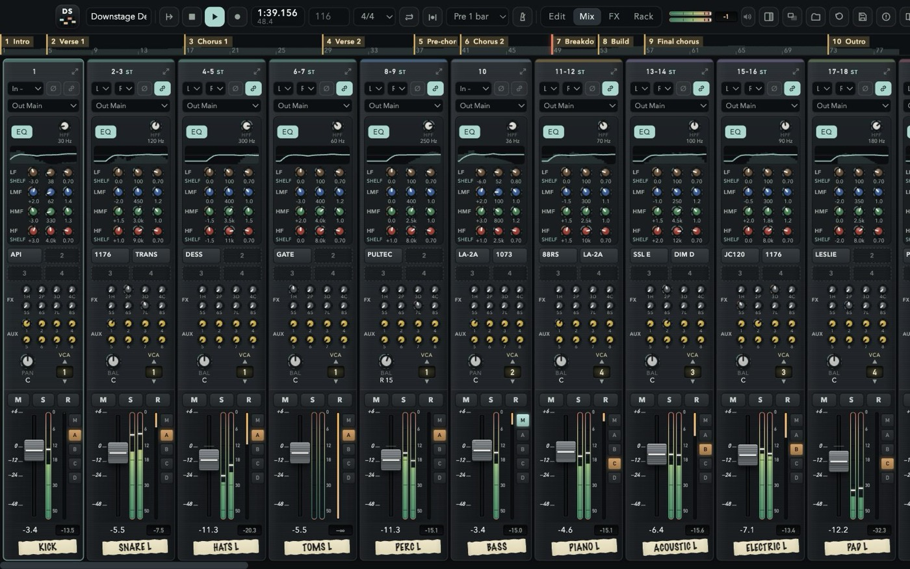
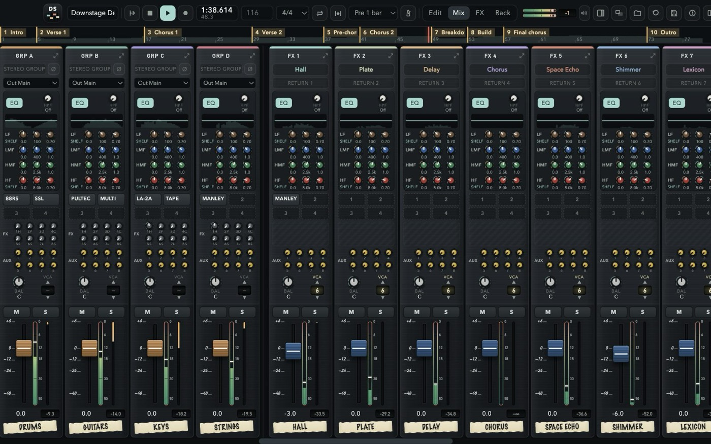
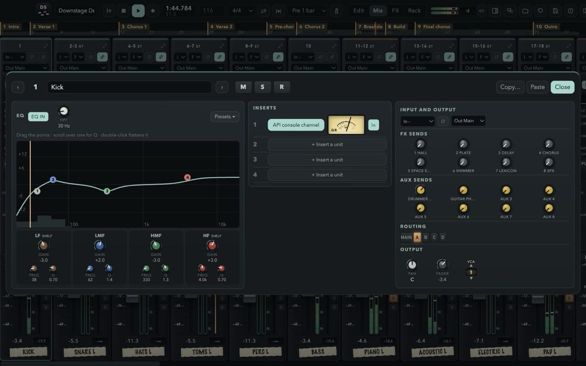
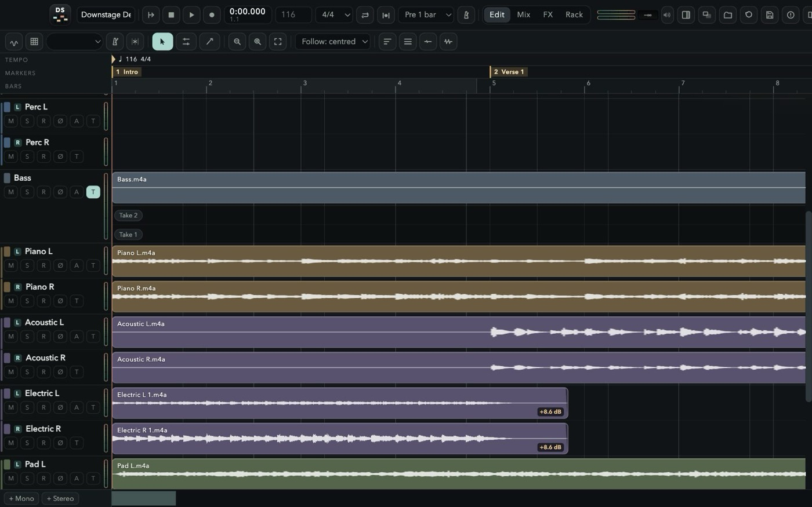
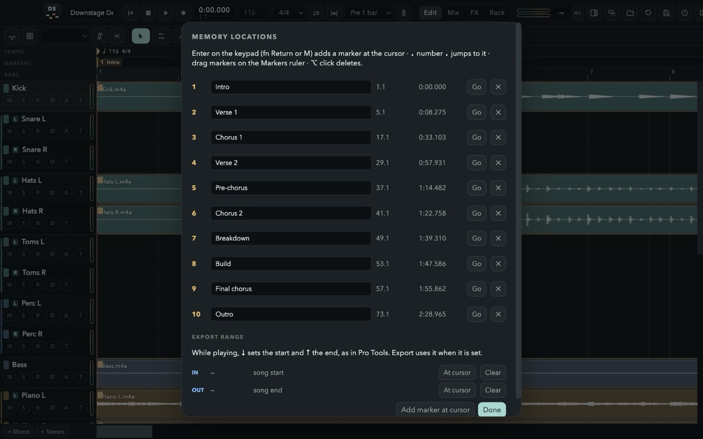
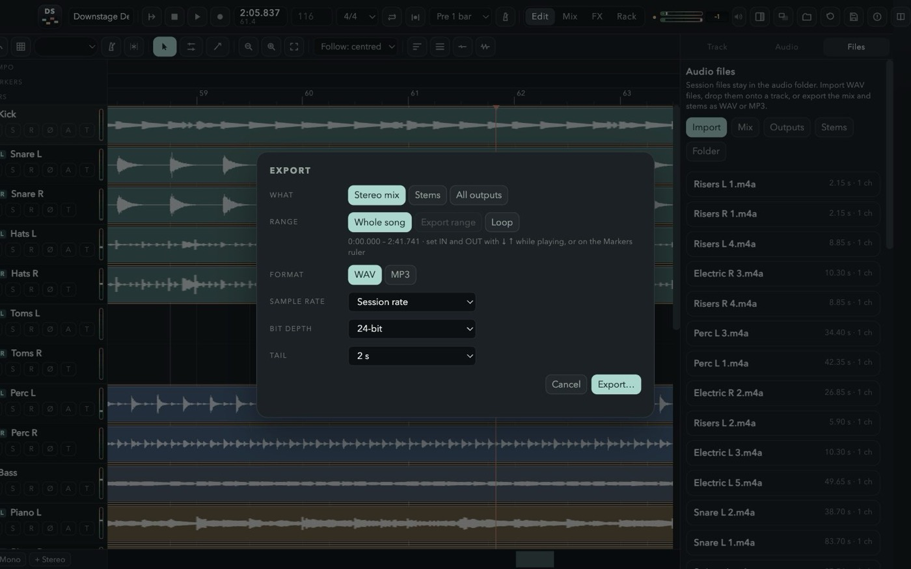
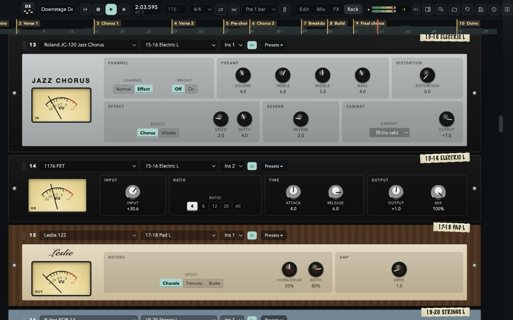
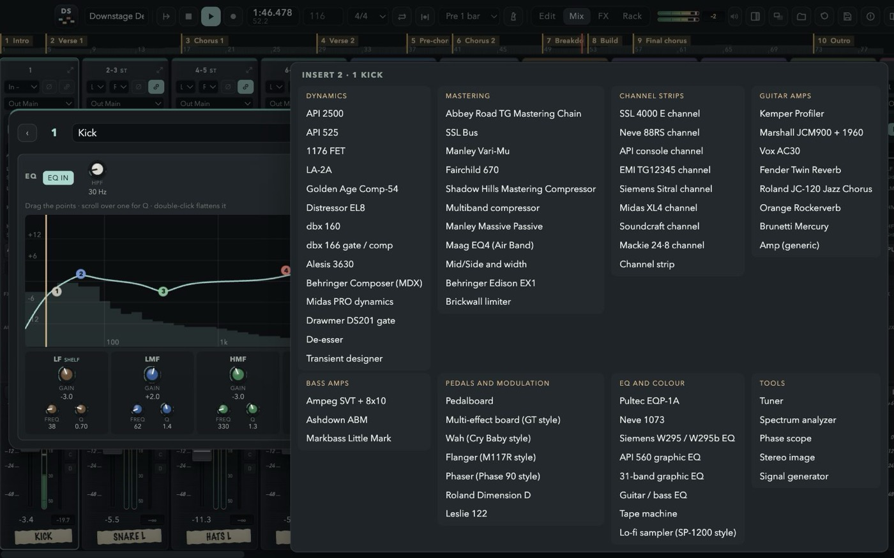
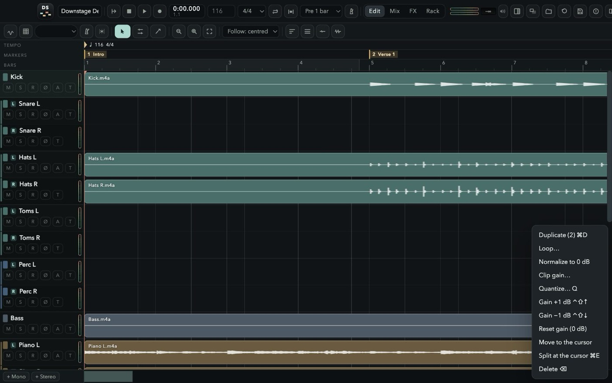
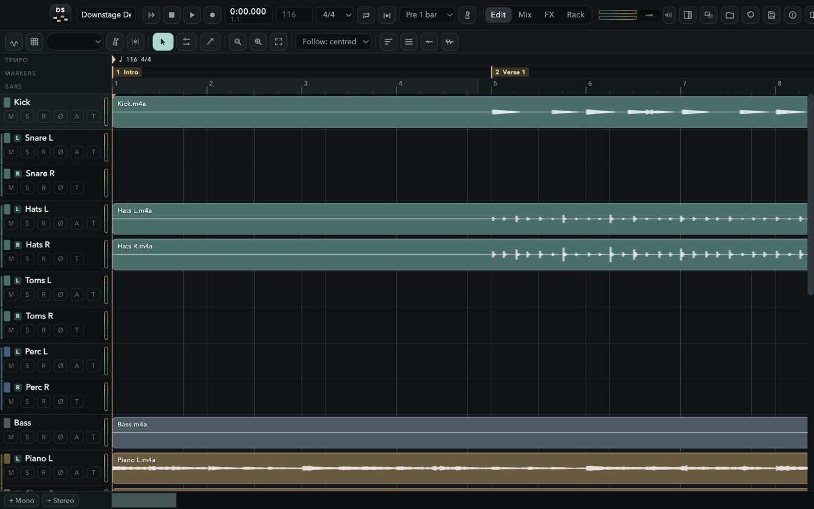

DOWNSTAGE
Record. Mix. Play it loud.A multitrack recorder and an analog-style console in one window. 48 channels, a desk that lines up like the real thing, a 64-slot rack full of classic outboard, amps and pedals — and a price tag of zero.

A DESK, NOT A SPREADSHEET
Every strip looks and works like a channel on a large-format console — and every strip has the same sections at the same height, so your eyes read the whole board at once.
SSL-STYLE STRIPS
High-pass, four fully parametric bands over a live analyser, four inserts, eight FX and eight aux sends, pan, a one-VCA selector and slim SSL faders with gain-reduction meters.
GROUPS A–D
Four stereo groups that are full channel strips. Route any channel with the M and A–D buttons right beside its fader.
CUE MIXES THAT WORK
Eight stereo aux outputs, pre or post, with a seven-band EQ, the master into the phones and a click that stays out of the room.
EVERYTHING LINES UP
Channels, click, groups, FX returns, VCAs, aux outputs and master, left to right, over the whole screen — or Mix, FX and Rack each on a display of their own. Solo a group or a return and its channels come with it; solo safe and AFL on the auxes, like a real desk.


HIT RECORD. KEEP EVERY TAKE.
Nothing you play is ever thrown away. Record over what is there and the old pass stays underneath; punch in on the fly or on a range with pre-roll; loop a section for as many passes as it takes. Then drag across the best moment of each take and press “Use this” — comping the way Pro Tools taught your hands, with markers where you expect them and the mix out of the door in WAV or MP3.



NON-DESTRUCTIVE
New passes land on top, drawn as you play; the old ones stay underneath and in the take list, ready to comp, in files named after the channel and the take.
PUNCH & PRE-ROLL
Free punch while playing, auto punch on the loop range, 1–4 bars of pre-roll, loop recording.
COMPING
Open the takes under a track, drag across the good bit of any of them and press “Use this”.
TEMPO, GRID & QUANTIZE
Find the BPM and the grid in the audio — steady, or bar by bar for a band without a click — then quantize the hits, phase-locked across a drum kit. Plus a click strip with its own EQ and headphone sends.
MARKERS
Memory locations: keypad Enter drops one, “. 3 .” jumps there, ⌘5 lists them all with the export range.
WAV & MP3
The mix, every stem or every output, of the song, the IN–OUT range or the loop, with a real progress bar.
64 SLOTS. ANY UNIT.
Patch outboard onto any insert of any strip. Each faceplate carries a strip of masking tape with the channel it lives on — just like the real rack in the corner of the control room.
- API 2500 · API 525
- 1176 FET · LA-2A
- Golden Age Comp-54
- Distressor
- dbx 160 · dbx 166
- Alesis 3630 · Behringer Composer
- Midas PRO dynamics · DS201 gate
- De-esser · Transient designer
- Mastering Abbey Road TG chain, SSL bus, Vari-Mu, Fairchild, Shadow Hills, Massive Passive, Maag EQ4, mid/side, Edison EX1, multiband, brickwall limiter
- SSL 4000 E · Neve 88RS
- API 512 + 550A + 527
- EMI TG12345 · Siemens Sitral
- Midas XL4 · Soundcraft · Mackie 24·8
- Pultec EQP-1A · Neve 1073
- Siemens W295 · API 560
- Guitar & bass EQ tuned by note and scale
- 31-band graphic EQ · Tape · Lo-fi
- Tuner · Spectrum · Phase scope · Stereo image
- Kemper Profiler
- Marshall JCM900 + 1960 · Vox AC30
- Fender Twin · Roland JC-120
- Orange Rockerverb · Brunetti
- Ampeg SVT · Ashdown · Markbass
- Six-slot pedalboard Boss DS-1 to SY-1 and bass, Big Muff, Small Stone, Memory Man, Dyna Comp, TS808, Talkbox, Space, Eterna, RE-201, RE-555
- GT-style multi-effect board
- Wah · Flanger · Phaser
- Dimension D · Leslie 122


EIGHT BUSES OF SPACE
Every channel, group and the click has eight FX sends. A new session starts with the 480L, a vocal plate, delay, Space Echo, Quadraverb, SPX, chorus and shimmer; each of the eight buses loads any of these units — true stereo in, so a guitar on the left gets a room that leans left — comes back on its own strip with EQ and inserts, and goes to sleep when nothing feeds it.
- Large Hall
- Large + Stage
- Medium Hall
- Small Hall
- Random Hall
- Rich Plate
- A Plate
- Large Room
- Medium Room
- Small Room
- Ambience
- Rich Chamber
- Chorus Hall
- Flange Delay
- Gated Reverb
- Reverse Reverb
- Multi-tap + Verb
- Detune Doubler
- Big Snare
- Quad: all four
- Mic distance
- Speaker
- STEED
- Width
- Manual
- Width
- Speed
- Regen
- Negative
- Decay
- Pre-delay
- Size
- Damping
- Low cut
- Decay
- Pre-delay
- Damping
- Low cut
- 1/1
- 1/2
- 1/4.
- 1/4
- 1/8.
- 1/4t
- 1/8
- 1/8t
- 1/16
- Rate
- Depth
- Delay
- Modes 1–4: echo
- Modes 5–11: echo + spring
- Mode 12: spring only
- All 3 heads on mode 11
- +12
- +7
- +19
- +24
- −12
- +5
- Concert Hall
- Large Hall
- Random Hall
- Vocal Plate
- Rich Plate
- Chamber
- Large Room
- Small Room
- Ambience
- Chorus + Hall
- Echo + Plate
- Rev 1 Hall
- Rev 2 Room
- Rev 3 Vocal
- Rev 4 Plate
- Early Ref
- Gate Reverb
- Reverse Gate
- Delay L,R
- Stereo Echo
- Stereo Flange
- Chorus
- Stereo Phasing
- Tremolo
- Symphonic
- Pitch Change
FAST HANDS WELCOME
Slip and grid, split, trim, fades and crossfades, loop a clip N times, normalize, clip gain from −40 to +20 dB, automation — and the Pro Tools shortcuts you already know.

LEARN IT ON A REAL SONG
Press F1 in the app, or read the guide here: every window, every strip, every unit, and the full shortcut list, in six languages. The welcome screen opens the demo session too — an instrumental song made for Downstage, 22 channels mixed with groups, effects, outboard and automation, ready to be taken apart.

FREE.
NO CATCH.
Free for personal and professional use. No account, no subscription, no ads, no tracking. The music you make is yours.
- Version
- 1.0.0
- File
- Downstage-1.0.0-macOS-arm64.dmg
- Size
- 130.9 MB
- Requires
- macOS 13 Ventura or later on Apple Silicon (M1 and later)
- SHA-256
8b71722aa732ce57b316cad28c502a783b39a5c2b2d06f4cbd1af8f1e808f567
- Open the disk image and drag Downstage into Applications.
- Open Downstage. It is signed and notarized by Apple, so the first time macOS only asks whether to open an app downloaded from the internet: click Open.
- Allow microphone access when you record for the first time, then pick your audio interface from the top bar.
FAQ
Is it really free?
Yes. Downstage is free for personal and professional use, including recording, mixing and releasing music commercially. You keep every right to your music.
Can I share, mirror or sell it?
No. Download it only from downstage.it. Redistributing, re-uploading, bundling, selling, renting or modifying the software is not allowed by the License Agreement.
Does it run on Intel Macs?
This version is built for Apple Silicon Macs (M1 and later) with macOS 13 Ventura or newer.
Does it load plugins?
No. Downstage comes with its own 41 rack units and 8 effects, built into the engine, so sessions always open the same way on any Mac.
Are the amps and compressors official?
No. They are independent models inspired by classic gear. Product names are used only to describe the sound they recall and belong to their owners; there is no affiliation or endorsement.
Where does the demo song come from?
It was created by Andrea Pollastri with Claude for Downstage: twelve stems of an instrumental song at 116 BPM, mixed in Downstage. It comes with the app to learn the console: open it, take it apart and remix it. See section 7 of the License Agreement.
Does it collect data?
The app works offline, with no account and no telemetry; it only asks downstage.it whether a newer version is out (you can turn that off). The website uses no cookies. It counts visits with a script from stats.misterdev.it; see the Privacy Notice.
How do updates arrive?
Downstage checks this site for a new version when it starts and from its menu. When one is out it asks, downloads it, checks its signature and checksum, and installs it when you quit — your session is saved first. If you prefer, download the disk image here and drag the app over the old one.